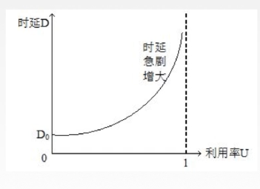
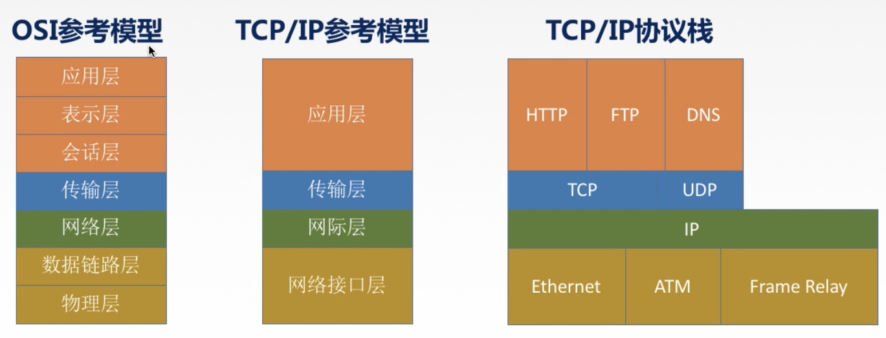
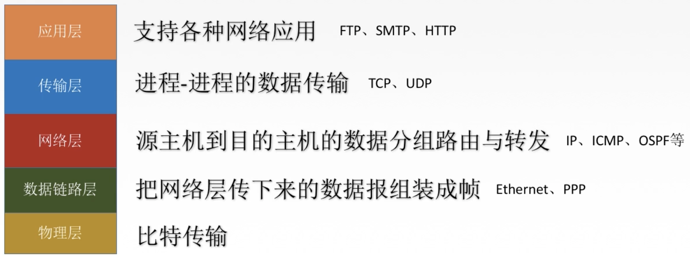

1 概念、组成、功能和分类
计算机网络：将分散的、具有独立功能的计算机系统，通过通信设备与线路连接起来，由功能完善的软件实现资源共享和信息传递的系统。
计算机网络是互连的、自治的计算机集合。
计算机网络的功能：
- 数据通信：连通性
- 资源共享：硬件、软件、数据
- 分布式处理：多台计算机各自承担同一工作的不同部分
- 提高可靠性
- 负载均衡
- …
计算机网络的组成划分：
- 组成部分：硬件、软件、协议
- 工作方式：边缘、核心
- 功能组成：通信子网（实现数据通信）、资源子网（实现资源共享）

计算机网络的分类：
- 按分布范围：广域网WAN，城域网MAN，局域网LAN，个人区域网PAN
- 按使用者：公用网（运营商提供），专用网（政府部门之类专用）
- 按交换技术：电路交换，报文交换，分组交换
- 按拓扑结构：总线型，星型，环型，网状型
- 按传输技术：广播式网络（共享公共通信信道），点对点网络（使用分组存储转发和路由选择机制）

2 标准化工作及相关组织
标准的分类：
- 法定标准：权威机构指定的正式的、合法的标准（OSI）
- 事实标准：某些公司的产品在竞争中占据主流，时间长了这些产品的协议和技术成了标准（TCP/IP）
RFC（Request for Comments）：因特网标准的形式
组织：ISO，ITU，IEEE，IETF
3 性能指标
3.1 与速率相关的性能指标
速率：数据率、数据传输率、比特率。连接在计算机网络上的主机在数字信道上传送数据位数的速率。
- 比特：1/0 位
- 单位：b/s，kb/s，Mb/s，Gb/s，Tb/s。（换算10^3）
注意：存储容量，字节1Byte = 8bit，单位1KB = 2^10 B = 1024 B = 1024 * 8b，大写B，换算2^10。
带宽：单位时间从网络中某一点到另一点所能通过的最高数据率，及网络设备所支持的最高速度。单位同速率。
吞吐量：单位时间内通过某个网络（或信道、接口）的数据量。单位同速率。受网络带宽的限制。
3.2 与时延相关的性能指标
时延：数据（报文、分组、比特流）从网络（或链路）的一端传送到另一端所需的时间，单位s。
- 发送（传输）时延：发送分组的第一个比特算起到该分组的最后一个比特发送完毕所需的时间。发送实验=数据长度/信道带宽（发送速率）
- 传播时延：取决于电磁波的传播速度（基本固定）和链路长度。传输时延=信道长度/电磁波在信道上的传播速率
- 排队时延：等待输出或输入链路可用的等待时间。
- 处理时延：检错，找出口。
时延带宽积：= 传播时延* 带宽，单位bit。描述某段链路中现在的比特容量。
往返时延RTT：从发送方发送数据开始到发送方收到接收方的确认（接收方收到数据后立即发送确认）为止总共经历的时延。ping。包括：
- 往返传播时延 = 传播时延*2
- 末端处理时间
利用率：
- 信道利用率：有数据通过的时间/有+无数据通过的时间
- 网络利用率：信道利用率加权平均值
信道利用率越高，时延越大。

4 分层结构
分层结构的构成：
- 实体：第n层中的活动元素称为n层实体。同一层实体叫对等实体。
- 协议：为进行网络中的对等实体数据交换而建立的规则、标准或约定。（水平）
- 语法：规定传输数据的格式
- 语义：规定所要完成的功能
- 同步：规定各种操作的顺序
- 接口（访问服务点SAP）：上层使用下层服务的入口。
- 服务：下层为相邻上层提供的功能调用。（垂直）
计算机网络体系结构是计算机网络的各层及其协议的集合。
第n层在向n-1层提供服务时，此服务不仅包含第n层本身的功能还包含下层服务提供的功能。接口仅存在于相邻层，且所提供的服务实现细节对上一层完全屏蔽。
PDU = PCI+SDU
- PDU 协议数据单元：对等层次之间传送的数据单位。
- PCI 协议控制信息：控制协议操作的信息。
- SDU 服务数据单元：为完成用户所要求的功能而传送的数据。

5 OSI参考模型
5.1 OSI概述和通信过程
- 7层OSI参考模型（法定标准）
- 4层TCP/IP参考模型（事实标准）
- 5层模型（学习用）
OSI由ISO于1984年提出，开放系统互连模型。但是理论成功，市场失败。


端到端通信指关注数据从终端到终端，运行在不同主机内两个进程间的通信（端口号），不管细节，只管目的主机；点到点通信关注当前数据位置和下一个传送点，通常是中间设备。

数据链路层不仅加了头部，还加了尾部，物理层是傻瓜层，不会对数据进行封装。
5.2 OSI各层功能及协议
应用层：所有能和用户交互产生网络流量的程序。典型服务：
- 文件传输FTP
- 电子邮件SMTP
- 万维网HTTP
表示层：用于处理两个通信系统中交换信息的表示方式（语法和语义）。主要功能有：
- 数据格式变换（翻译官，比如比特流到图片格式）
- 数据加密解密（比如对密码）
- 数据压缩和恢复（比如视频信息）
会话层：向表示层的实体/用户进程提供建立连接并在连接上有序地传输数据。 这个过程称为会话或建立同步（SYN）。
- 建立、管理、终止会话
- 使用校验点使会话在通信失效时从这个点继续恢复通信，实现数据同步，比如传输大文件。
传输层：负责主机中两个进程的通信，即端到端通信，传输单位是报文段（segment）或用户数据报（user datagram）。TCP，UDP。
- 可靠传输、不可靠传输
- 差错控制
- 流量控制
- 复用分用
- 复用：多个应用层进程可以同时使用下面运输层的服务。
- 分用：运输层把收到的信息分别交付给上面应用层中相应的进程。
网络层：把分组从源端传到目的端，为分组交换网上的不同主机提供通信服务，网络层传输单位是数据包。
- 路由选择
- 流量控制
- 差错控制
- 拥塞控制
数据链路层：把网络层传下来的数据包组装成帧。
- 成帧（定义帧的开始和结束）
- 差错控制（帧错，位错）
- 流量控制
- 访问（接入）控制（控制对信道的访问）
物理层：在物理媒体上实现比特流的透明传输。传输单位是比特。
- 透明传输：不管所传数据是什么样的比特组合，都应当被放在链路上传送
- 定义接口特性
- 定义传输模式：单工（单向传输）、半双工（两端都可作为发送方或接收方，但是同时只能一个传输，对讲机）、双工（双向，同时传输，打电话）
- 定义传输速率
- 比特同步
- 比特编码
6 TCP/IP模型和五层模型

OSI和TCP/IP的相同点：
- 都分层
- 基于独立的协议栈概念
- 可以实现异构网络互联
区别：
- OSI定义三点：服务、协议、接口
- OSI先出现，参考模型先于协议发明，不偏向特定协议
- TCP/IP设计之初考虑到异构网的互联问题，IP作为重要层次
- 通信方式不同

- 面向连接：三个阶段，建立连接、数据传输、释放连接。
- 无连接：直接进行数据传输
5层模型：综合两者优点

参考资料：
B站 2019 王道考研 计算机网络
最后更新： 2021年07月15日 03:46